Legend: GT boundary green, prediction boundary magenta, TP blue tint, FP red, FN yellow. Accepted cuts: orange if true gap/background, red if GT foreground.
cut=9.0 px, Dice +0.000145, Recall +0.000000, BIoU +0.000430, gapFP -0.000499
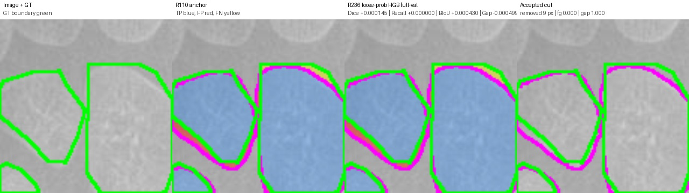
{
"anchor_boundary_f1": "0.4067627425291659",
"anchor_boundary_iou": "0.2553058187798575",
"anchor_component_count_mae": "0.0",
"anchor_component_delta_mean": "0.0",
"anchor_dice": "0.8978390408500251",
"anchor_gap_region_fp_rate": "0.19581738503356078",
"anchor_iou": "0.8146169880145909",
"anchor_precision": "0.8750043729228616",
"anchor_recall": "0.9218974604695735",
"cut_pixels": "9.0",
"delta_boundary_f1": "0.0005453574895408764",
"delta_boundary_iou": "0.00042983230463083943",
"delta_component_count_mae": "0.0",
"delta_component_delta_mean": "0.0",
"delta_dice": "0.00014505450603430337",
"delta_gap_region_fp_rate": "-0.000499251123315031",
"delta_iou": "0.00023885169871740164",
"delta_precision": "0.00027558228430524245",
"delta_recall": "0.0",
"edited": "1.0",
"image": "10520.png",
"num_accepted_cuts": "1.0",
"r233_boundary_f1": "0.40730810001870676",
"r233_boundary_iou": "0.2557356510844883",
"r233_component_count_mae": "0.0",
"r233_component_delta_mean": "0.0",
"r233_dice": "0.8979840953560594",
"r233_gap_region_fp_rate": "0.19531813391024574",
"r233_iou": "0.8148558397133083",
"r233_precision": "0.8752799552071668",
"r233_recall": "0.9218974604695735"
}
cut=8.0 px, Dice +0.000079, Recall +0.000000, BIoU +0.000273, gapFP -0.000370
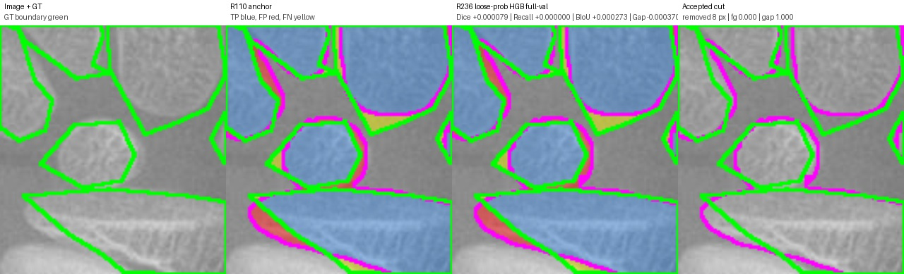
{
"anchor_boundary_f1": "0.2542683228584154",
"anchor_boundary_iou": "0.14565143440299352",
"anchor_component_count_mae": "3.0",
"anchor_component_delta_mean": "-3.0",
"anchor_dice": "0.8543689320388349",
"anchor_gap_region_fp_rate": "0.3637540453074434",
"anchor_iou": "0.7457627118644068",
"anchor_precision": "0.8009068515248621",
"anchor_recall": "0.915478919565434",
"cut_pixels": "8.0",
"delta_boundary_f1": "0.0004155468336108914",
"delta_boundary_iou": "0.000272771114482262",
"delta_component_count_mae": "0.0",
"delta_component_delta_mean": "0.0",
"delta_dice": "7.947895224613699e-05",
"delta_gap_region_fp_rate": "-0.0003698566805362957",
"delta_iou": "0.00012112190541269108",
"delta_precision": "0.00013969813173886347",
"delta_recall": "0.0",
"edited": "1.0",
"image": "10624.png",
"num_accepted_cuts": "1.0",
"r233_boundary_f1": "0.2546838696920263",
"r233_boundary_iou": "0.14592420551747579",
"r233_component_count_mae": "3.0",
"r233_component_delta_mean": "-3.0",
"r233_dice": "0.854448410991081",
"r233_gap_region_fp_rate": "0.3633841886269071",
"r233_iou": "0.7458838337698195",
"r233_precision": "0.8010465496566009",
"r233_recall": "0.915478919565434"
}
cut=36.0 px, Dice +0.000294, Recall +0.000000, BIoU +0.000887, gapFP -0.001173
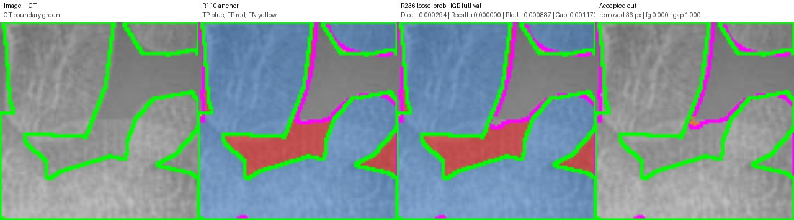
{
"anchor_boundary_f1": "0.4076344385622736",
"anchor_boundary_iou": "0.25599300087489063",
"anchor_component_count_mae": "1.0",
"anchor_component_delta_mean": "1.0",
"anchor_dice": "0.8741845467526529",
"anchor_gap_region_fp_rate": "0.1957871878393051",
"anchor_iou": "0.7764900936748735",
"anchor_precision": "0.8566516068848201",
"anchor_recall": "0.8924501695948779",
"cut_pixels": "36.0",
"delta_boundary_f1": "0.0011233311751788766",
"delta_boundary_iou": "0.0008866633042138305",
"delta_component_count_mae": "0.0",
"delta_component_delta_mean": "0.0",
"delta_dice": "0.0002938078821720369",
"delta_gap_region_fp_rate": "-0.0011726384364820763",
"delta_iou": "0.00046373767601148863",
"delta_precision": "0.0005644633997959891",
"delta_recall": "0.0",
"edited": "1.0",
"image": "11852.png",
"num_accepted_cuts": "1.0",
"r233_boundary_f1": "0.4087577697374525",
"r233_boundary_iou": "0.25687966417910446",
"r233_component_count_mae": "1.0",
"r233_component_delta_mean": "1.0",
"r233_dice": "0.8744783546348249",
"r233_gap_region_fp_rate": "0.19461454940282302",
"r233_iou": "0.776953831350885",
"r233_precision": "0.8572160702846161",
"r233_recall": "0.8924501695948779"
}
cut=5.0 px, Dice +0.000031, Recall +0.000000, BIoU +0.000191, gapFP -0.000183
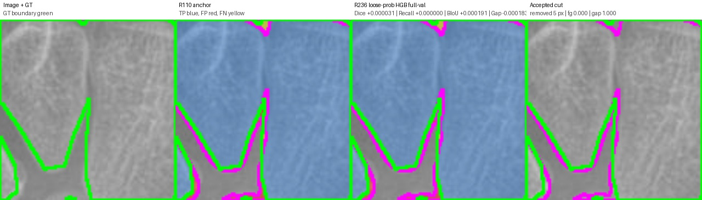
{
"anchor_boundary_f1": "0.3760599262329366",
"anchor_boundary_iou": "0.23157253910274422",
"anchor_component_count_mae": "2.0",
"anchor_component_delta_mean": "2.0",
"anchor_dice": "0.925741399762752",
"anchor_gap_region_fp_rate": "0.2176649226153452",
"anchor_iou": "0.8617491166077739",
"anchor_precision": "0.9180576432912881",
"anchor_recall": "0.9335548614341729",
"cut_pixels": "5.0",
"delta_boundary_f1": "0.00025146193796199423",
"delta_boundary_iou": "0.00019073461202306907",
"delta_component_count_mae": "0.0",
"delta_component_delta_mean": "0.0",
"delta_dice": "3.050520314240579e-05",
"delta_gap_region_fp_rate": "-0.00018294244630637224",
"delta_iou": "5.2868692659302496e-05",
"delta_precision": "6.0003767535343755e-05",
"delta_recall": "0.0",
"edited": "1.0",
"image": "12827.png",
"num_accepted_cuts": "1.0",
"r233_boundary_f1": "0.3763113881708986",
"r233_boundary_iou": "0.2317632737147673",
"r233_component_count_mae": "2.0",
"r233_component_delta_mean": "2.0",
"r233_dice": "0.9257719049658945",
"r233_gap_region_fp_rate": "0.21748198016903883",
"r233_iou": "0.8618019853004332",
"r233_precision": "0.9181176470588235",
"r233_recall": "0.9335548614341729"
}
cut=92.0 px, Dice +0.000674, Recall +0.000000, BIoU +0.001164, gapFP -0.002775
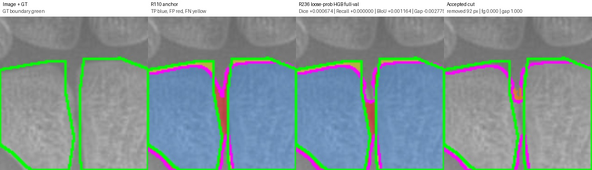
{
"anchor_boundary_f1": "0.3631018008085263",
"anchor_boundary_iou": "0.22182308037718904",
"anchor_component_count_mae": "0.0",
"anchor_component_delta_mean": "0.0",
"anchor_dice": "0.9164516103259003",
"anchor_gap_region_fp_rate": "0.16284825077805692",
"anchor_iou": "0.8457874323467386",
"anchor_precision": "0.9284615758203688",
"anchor_recall": "0.9047483830257138",
"cut_pixels": "92.0",
"delta_boundary_f1": "0.0015575541880081811",
"delta_boundary_iou": "0.0011637059603826494",
"delta_component_count_mae": "0.0",
"delta_component_delta_mean": "0.0",
"delta_dice": "0.0006741362619832048",
"delta_gap_region_fp_rate": "-0.002774757208744233",
"delta_iou": "0.0011490828562384925",
"delta_precision": "0.001384887319435646",
"delta_recall": "0.0",
"edited": "1.0",
"image": "13436.png",
"num_accepted_cuts": "1.0",
"r233_boundary_f1": "0.36465935499653446",
"r233_boundary_iou": "0.22298678633757169",
"r233_component_count_mae": "0.0",
"r233_component_delta_mean": "0.0",
"r233_dice": "0.9171257465878835",
"r233_gap_region_fp_rate": "0.1600734935693127",
"r233_iou": "0.8469365152029771",
"r233_precision": "0.9298464631398045",
"r233_recall": "0.9047483830257138"
}
cut=9.0 px, Dice +0.000192, Recall +0.000000, BIoU +0.000402, gapFP -0.000596
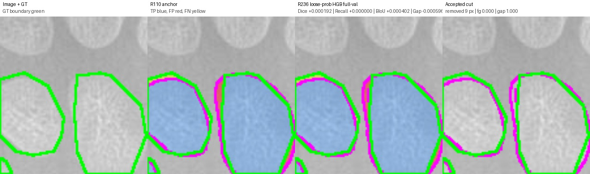
{
"anchor_boundary_f1": "0.4851149159339812",
"anchor_boundary_iou": "0.320232155584971",
"anchor_component_count_mae": "0.0",
"anchor_component_delta_mean": "0.0",
"anchor_dice": "0.9162424157891066",
"anchor_gap_region_fp_rate": "0.06518714806227227",
"anchor_iou": "0.8454311454311454",
"anchor_precision": "0.9513855363522256",
"anchor_recall": "0.8836031027216069",
"cut_pixels": "9.0",
"delta_boundary_f1": "0.0004608975901360113",
"delta_boundary_iou": "0.0004017974781195255",
"delta_component_count_mae": "0.0",
"delta_component_delta_mean": "0.0",
"delta_dice": "0.00019173599660771146",
"delta_gap_region_fp_rate": "-0.0005962239152037113",
"delta_iou": "0.00032654737173865023",
"delta_precision": "0.0004135459950335152",
"delta_recall": "0.0",
"edited": "1.0",
"image": "13441.png",
"num_accepted_cuts": "1.0",
"r233_boundary_f1": "0.4855758135241172",
"r233_boundary_iou": "0.3206339530630905",
"r233_component_count_mae": "0.0",
"r233_component_delta_mean": "0.0",
"r233_dice": "0.9164341517857143",
"r233_gap_region_fp_rate": "0.06459092414706856",
"r233_iou": "0.845757692802884",
"r233_precision": "0.9517990823472591",
"r233_recall": "0.8836031027216069"
}
cut=19.0 px, Dice +0.000565, Recall +0.000000, BIoU +0.000361, gapFP -0.001683
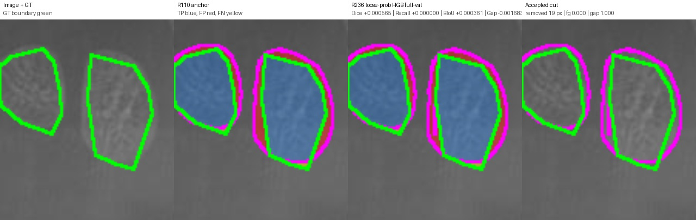
{
"anchor_boundary_f1": "0.26297229219143575",
"anchor_boundary_iou": "0.1513921113689095",
"anchor_component_count_mae": "0.0",
"anchor_component_delta_mean": "0.0",
"anchor_dice": "0.7886899151743638",
"anchor_gap_region_fp_rate": "0.38031537916371366",
"anchor_iou": "0.6511048863990041",
"anchor_precision": "0.6906113825432457",
"anchor_recall": "0.9192371913173389",
"cut_pixels": "19.0",
"delta_boundary_f1": "0.0005439272719202637",
"delta_boundary_iou": "0.0003606561587657653",
"delta_component_count_mae": "0.0",
"delta_component_delta_mean": "0.0",
"delta_dice": "0.000565347784966197",
"delta_gap_region_fp_rate": "-0.0016832034018426367",
"delta_iou": "0.0007709705123757349",
"delta_precision": "0.0008674301757335412",
"delta_recall": "0.0",
"edited": "1.0",
"image": "13517.png",
"num_accepted_cuts": "1.0",
"r233_boundary_f1": "0.263516219463356",
"r233_boundary_iou": "0.15175276752767528",
"r233_component_count_mae": "0.0",
"r233_component_delta_mean": "0.0",
"r233_dice": "0.78925526295933",
"r233_gap_region_fp_rate": "0.378632175761871",
"r233_iou": "0.6518758569113798",
"r233_precision": "0.6914788127189793",
"r233_recall": "0.9192371913173389"
}
cut=15.0 px, Dice +0.000137, Recall +0.000000, BIoU +0.000123, gapFP -0.000639
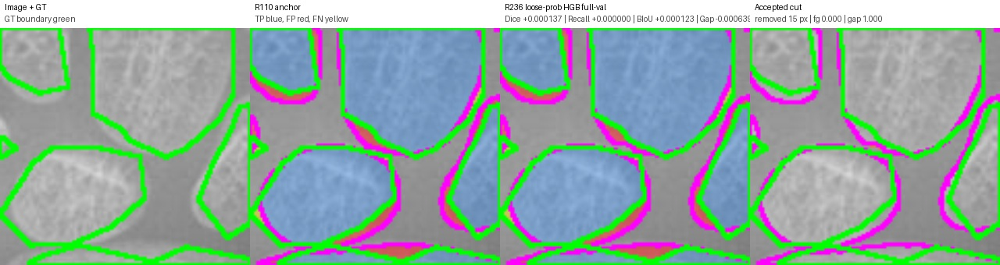
{
"anchor_boundary_f1": "0.27669350802966197",
"anchor_boundary_iou": "0.1605596620908131",
"anchor_component_count_mae": "4.0",
"anchor_component_delta_mean": "-4.0",
"anchor_dice": "0.8648620047409414",
"anchor_gap_region_fp_rate": "0.2727621156630611",
"anchor_iou": "0.7619003225626014",
"anchor_precision": "0.8488719930200673",
"anchor_recall": "0.8814659821390052",
"cut_pixels": "15.0",
"delta_boundary_f1": "0.0001819753423411008",
"delta_boundary_iou": "0.0001225641210360895",
"delta_component_count_mae": "0.0",
"delta_component_delta_mean": "0.0",
"delta_dice": "0.00013730729004890474",
"delta_gap_region_fp_rate": "-0.0006387871561195912",
"delta_iou": "0.0002131467947039667",
"delta_precision": "0.0002645944744779083",
"delta_recall": "0.0",
"edited": "1.0",
"image": "13867.png",
"num_accepted_cuts": "1.0",
"r233_boundary_f1": "0.2768754833720031",
"r233_boundary_iou": "0.1606822262118492",
"r233_component_count_mae": "4.0",
"r233_component_delta_mean": "-4.0",
"r233_dice": "0.8649993120309903",
"r233_gap_region_fp_rate": "0.2721233285069415",
"r233_iou": "0.7621134693573054",
"r233_precision": "0.8491365874945452",
"r233_recall": "0.8814659821390052"
}
cut=27.0 px, Dice +0.000300, Recall +0.000000, BIoU +0.001987, gapFP -0.001269
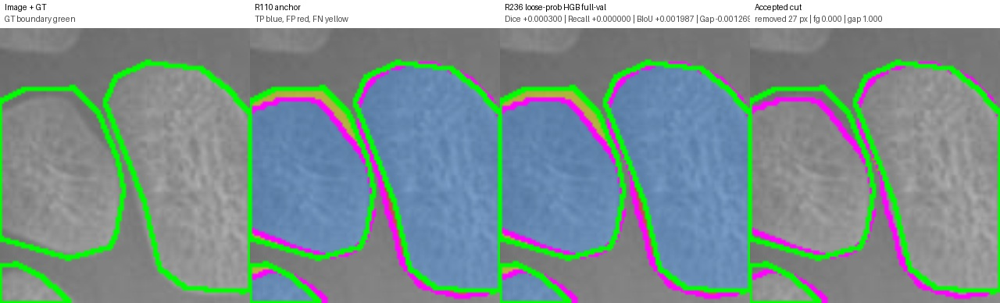
{
"anchor_boundary_f1": "0.35788797945755096",
"anchor_boundary_iou": "0.2179437060203284",
"anchor_component_count_mae": "1.0",
"anchor_component_delta_mean": "-1.0",
"anchor_dice": "0.9018459986963634",
"anchor_gap_region_fp_rate": "0.05983830027263326",
"anchor_iou": "0.8212381848317878",
"anchor_precision": "0.966445252780853",
"anchor_recall": "0.8453415719456805",
"cut_pixels": "27.0",
"delta_boundary_f1": "0.002674798052747007",
"delta_boundary_iou": "0.0019871169255699372",
"delta_component_count_mae": "0.0",
"delta_component_delta_mean": "0.0",
"delta_dice": "0.0002995650062103117",
"delta_gap_region_fp_rate": "-0.0012691548368901004",
"delta_iou": "0.0004969504244931588",
"delta_precision": "0.0006882968485421026",
"delta_recall": "0.0",
"edited": "1.0",
"image": "15446.png",
"num_accepted_cuts": "1.0",
"r233_boundary_f1": "0.36056277751029797",
"r233_boundary_iou": "0.21993082294589833",
"r233_component_count_mae": "1.0",
"r233_component_delta_mean": "-1.0",
"r233_dice": "0.9021455637025737",
"r233_gap_region_fp_rate": "0.05856914543574316",
"r233_iou": "0.821735135256281",
"r233_precision": "0.9671335496293951",
"r233_recall": "0.8453415719456805"
}
cut=19.0 px, Dice +0.000099, Recall +0.000000, BIoU +0.000744, gapFP -0.000592
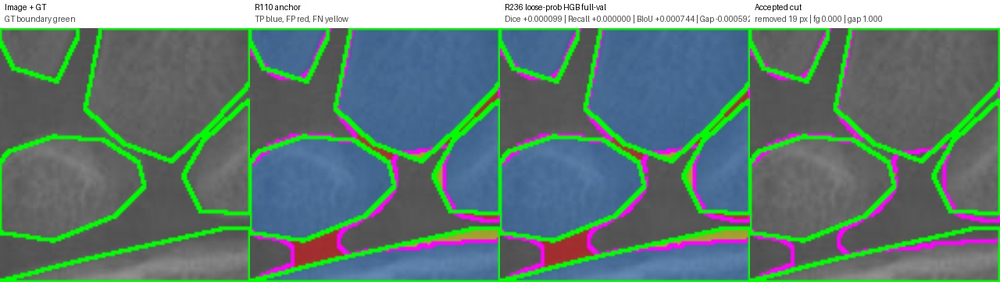
{
"anchor_boundary_f1": "0.4165490993799009",
"anchor_boundary_iou": "0.2630641084082715",
"anchor_component_count_mae": "2.0",
"anchor_component_delta_mean": "-2.0",
"anchor_dice": "0.9322967245782929",
"anchor_gap_region_fp_rate": "0.19494562338350316",
"anchor_iou": "0.8731796052700757",
"anchor_precision": "0.926983914358751",
"anchor_recall": "0.9376707843092974",
"cut_pixels": "19.0",
"delta_boundary_f1": "0.0009317215498741982",
"delta_boundary_iou": "0.0007436396754244012",
"delta_component_count_mae": "0.0",
"delta_component_delta_mean": "0.0",
"delta_dice": "9.944442567055845e-05",
"delta_gap_region_fp_rate": "-0.0005920663114268865",
"delta_iou": "0.0001744816425489626",
"delta_precision": "0.00019664926056028875",
"delta_recall": "0.0",
"edited": "1.0",
"image": "1620.png",
"num_accepted_cuts": "1.0",
"r233_boundary_f1": "0.4174808209297751",
"r233_boundary_iou": "0.2638077480836959",
"r233_component_count_mae": "2.0",
"r233_component_delta_mean": "-2.0",
"r233_dice": "0.9323961690039635",
"r233_gap_region_fp_rate": "0.19435355707207627",
"r233_iou": "0.8733540869126246",
"r233_precision": "0.9271805636193113",
"r233_recall": "0.9376707843092974"
}
cut=37.0 px, Dice +0.000131, Recall +0.000000, BIoU +0.000032, gapFP -0.000408
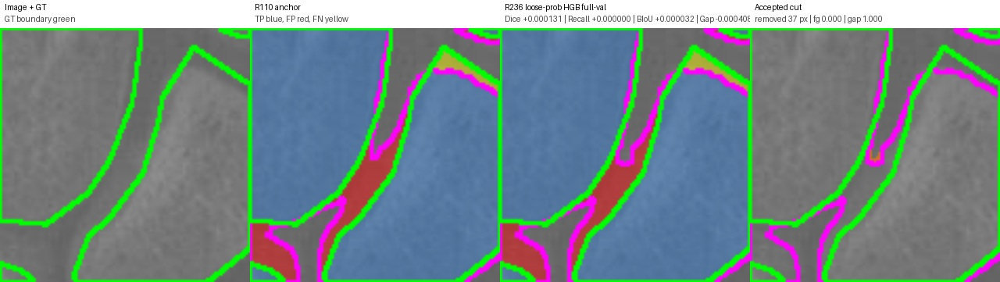
{
"anchor_boundary_f1": "0.21280542592968318",
"anchor_boundary_iou": "0.11907233214401557",
"anchor_component_count_mae": "2.0",
"anchor_component_delta_mean": "-2.0",
"anchor_dice": "0.9040244280075417",
"anchor_gap_region_fp_rate": "0.19723747892761978",
"anchor_iou": "0.8248581912861853",
"anchor_precision": "0.9315077345611696",
"anchor_recall": "0.8781163856779519",
"cut_pixels": "37.0",
"delta_boundary_f1": "5.0516829796565244e-05",
"delta_boundary_iou": "3.1632585131516344e-05",
"delta_component_count_mae": "0.0",
"delta_component_delta_mean": "0.0",
"delta_dice": "0.00013113103275941285",
"delta_gap_region_fp_rate": "-0.0004078525205285788",
"delta_iou": "0.00021836633952654338",
"delta_precision": "0.00027849339985108745",
"delta_recall": "0.0",
"edited": "1.0",
"image": "1736.png",
"num_accepted_cuts": "1.0",
"r233_boundary_f1": "0.21285594275947975",
"r233_boundary_iou": "0.11910396472914708",
"r233_component_count_mae": "2.0",
"r233_component_delta_mean": "-2.0",
"r233_dice": "0.9041555590403011",
"r233_gap_region_fp_rate": "0.1968296264070912",
"r233_iou": "0.8250765576257119",
"r233_precision": "0.9317862279610207",
"r233_recall": "0.8781163856779519"
}
cut=13.0 px, Dice +0.000081, Recall +0.000000, BIoU +0.000000, gapFP -0.000517
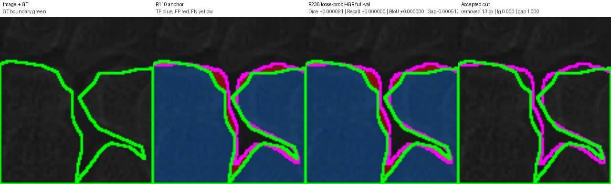
{
"anchor_boundary_f1": "0.3592010609653177",
"anchor_boundary_iou": "0.21891838934064858",
"anchor_component_count_mae": "2.0",
"anchor_component_delta_mean": "2.0",
"anchor_dice": "0.9265241541827975",
"anchor_gap_region_fp_rate": "0.20216319389215842",
"anchor_iou": "0.8631066621508047",
"anchor_precision": "0.9270297216458732",
"anchor_recall": "0.9260191378544608",
"cut_pixels": "13.0",
"delta_boundary_f1": "0.0",
"delta_boundary_iou": "0.0",
"delta_component_count_mae": "0.0",
"delta_component_delta_mean": "0.0",
"delta_dice": "8.110330481292394e-05",
"delta_gap_region_fp_rate": "-0.0005169397168760803",
"delta_iou": "0.00014077217032548717",
"delta_precision": "0.0001623979083588134",
"delta_recall": "0.0",
"edited": "1.0",
"image": "3058.png",
"num_accepted_cuts": "1.0",
"r233_boundary_f1": "0.3592010609653177",
"r233_boundary_iou": "0.21891838934064858",
"r233_component_count_mae": "2.0",
"r233_component_delta_mean": "2.0",
"r233_dice": "0.9266052574876105",
"r233_gap_region_fp_rate": "0.20164625417528234",
"r233_iou": "0.8632474343211302",
"r233_precision": "0.927192119554232",
"r233_recall": "0.9260191378544608"
}
cut=29.0 px, Dice +0.000251, Recall +0.000000, BIoU +0.000123, gapFP -0.001262
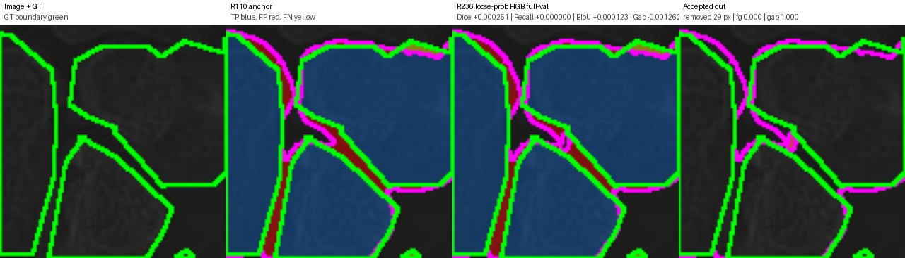
{
"anchor_boundary_f1": "0.4301708898055392",
"anchor_boundary_iou": "0.27402402402402404",
"anchor_component_count_mae": "4.0",
"anchor_component_delta_mean": "-4.0",
"anchor_dice": "0.9191734977814545",
"anchor_gap_region_fp_rate": "0.20281028407360682",
"anchor_iou": "0.8504357506914607",
"anchor_precision": "0.9054859979256186",
"anchor_recall": "0.9332811545510079",
"cut_pixels": "29.0",
"delta_boundary_f1": "0.00015160329681729312",
"delta_boundary_iou": "0.00012304835956289395",
"delta_component_count_mae": "0.0",
"delta_component_delta_mean": "0.0",
"delta_dice": "0.000250651465820928",
"delta_gap_region_fp_rate": "-0.0012615826336624947",
"delta_iou": "0.00042922894583952154",
"delta_precision": "0.00048661293738017086",
"delta_recall": "0.0",
"edited": "1.0",
"image": "3392.png",
"num_accepted_cuts": "1.0",
"r233_boundary_f1": "0.4303224931023565",
"r233_boundary_iou": "0.27414707238358693",
"r233_component_count_mae": "4.0",
"r233_component_delta_mean": "-4.0",
"r233_dice": "0.9194241492472754",
"r233_gap_region_fp_rate": "0.20154870143994433",
"r233_iou": "0.8508649796373002",
"r233_precision": "0.9059726108629987",
"r233_recall": "0.9332811545510079"
}
cut=4.0 px, Dice +0.000037, Recall +0.000000, BIoU +0.000178, gapFP -0.000179
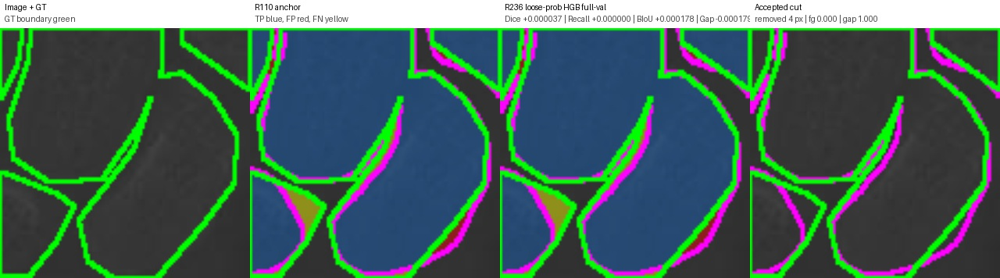
{
"anchor_boundary_f1": "0.45877446262431826",
"anchor_boundary_iou": "0.29766860949208995",
"anchor_component_count_mae": "1.0",
"anchor_component_delta_mean": "-1.0",
"anchor_dice": "0.9288746924847234",
"anchor_gap_region_fp_rate": "0.15706853247219232",
"anchor_iou": "0.8671951693863564",
"anchor_precision": "0.9284142061115628",
"anchor_recall": "0.9293356358800294",
"cut_pixels": "4.0",
"delta_boundary_f1": "0.0002118814321385165",
"delta_boundary_iou": "0.00017842274295226668",
"delta_component_count_mae": "0.0",
"delta_component_delta_mean": "0.0",
"delta_dice": "3.6858644199999624e-05",
"delta_gap_region_fp_rate": "-0.00017940437746680193",
"delta_iou": "6.425452769376339e-05",
"delta_precision": "7.364713583435378e-05",
"delta_recall": "0.0",
"edited": "1.0",
"image": "3602.png",
"num_accepted_cuts": "1.0",
"r233_boundary_f1": "0.4589863440564568",
"r233_boundary_iou": "0.2978470322350422",
"r233_component_count_mae": "1.0",
"r233_component_delta_mean": "-1.0",
"r233_dice": "0.9289115511289234",
"r233_gap_region_fp_rate": "0.15688912809472552",
"r233_iou": "0.8672594239140502",
"r233_precision": "0.9284878532473971",
"r233_recall": "0.9293356358800294"
}
cut=12.0 px, Dice +0.000170, Recall +0.000000, BIoU +0.001180, gapFP -0.000672
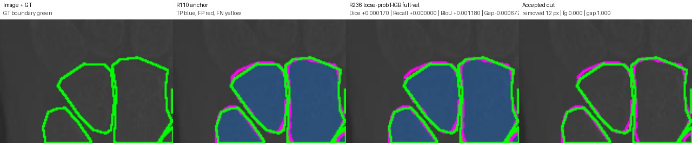
{
"anchor_boundary_f1": "0.47867191896454697",
"anchor_boundary_iou": "0.31464082266775173",
"anchor_component_count_mae": "0.0",
"anchor_component_delta_mean": "0.0",
"anchor_dice": "0.9127124700910475",
"anchor_gap_region_fp_rate": "0.09625189086223318",
"anchor_iou": "0.8394398399542726",
"anchor_precision": "0.94174228093238",
"anchor_recall": "0.8854188647393965",
"cut_pixels": "12.0",
"delta_boundary_f1": "0.001364072487483159",
"delta_boundary_iou": "0.00117980778955179",
"delta_component_count_mae": "0.0",
"delta_component_delta_mean": "0.0",
"delta_dice": "0.00017020279162538454",
"delta_gap_region_fp_rate": "-0.0006723065717967464",
"delta_iou": "0.00028798896676340835",
"delta_precision": "0.00036247577929848784",
"delta_recall": "0.0",
"edited": "1.0",
"image": "3678.png",
"num_accepted_cuts": "1.0",
"r233_boundary_f1": "0.48003599145203013",
"r233_boundary_iou": "0.3158206304573035",
"r233_component_count_mae": "0.0",
"r233_component_delta_mean": "0.0",
"r233_dice": "0.9128826728826729",
"r233_gap_region_fp_rate": "0.09557958429043643",
"r233_iou": "0.839727828921036",
"r233_precision": "0.9421047567116785",
"r233_recall": "0.8854188647393965"
}
cut=14.0 px, Dice +0.000625, Recall +0.000000, BIoU +0.002465, gapFP -0.001724
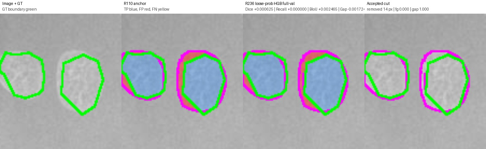
{
"anchor_boundary_f1": "0.28531894285318943",
"anchor_boundary_iou": "0.16639767591994836",
"anchor_component_count_mae": "1.0",
"anchor_component_delta_mean": "1.0",
"anchor_dice": "0.7830892826619565",
"anchor_gap_region_fp_rate": "0.29667487684729066",
"anchor_iou": "0.6435059462496489",
"anchor_precision": "0.6903063787041688",
"anchor_recall": "0.9046866771985256",
"cut_pixels": "14.0",
"delta_boundary_f1": "0.003615765050590636",
"delta_boundary_iou": "0.002464791946375555",
"delta_component_count_mae": "0.0",
"delta_component_delta_mean": "0.0",
"delta_dice": "0.0006251496810896207",
"delta_gap_region_fp_rate": "-0.0017241379310344862",
"delta_iou": "0.0008447335440688875",
"delta_precision": "0.0009721647019271806",
"delta_recall": "0.0",
"edited": "1.0",
"image": "5882.png",
"num_accepted_cuts": "1.0",
"r233_boundary_f1": "0.28893470790378006",
"r233_boundary_iou": "0.16886246786632392",
"r233_component_count_mae": "1.0",
"r233_component_delta_mean": "1.0",
"r233_dice": "0.7837144323430462",
"r233_gap_region_fp_rate": "0.29495073891625617",
"r233_iou": "0.6443506797937177",
"r233_precision": "0.691278543406096",
"r233_recall": "0.9046866771985256"
}
cut=9.0 px, Dice +0.000214, Recall +0.000000, BIoU +0.001111, gapFP -0.000690
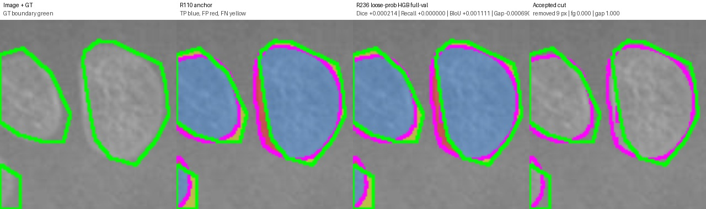
{
"anchor_boundary_f1": "0.2794491711253399",
"anchor_boundary_iou": "0.1624184339314845",
"anchor_component_count_mae": "0.0",
"anchor_component_delta_mean": "0.0",
"anchor_dice": "0.8289760348583878",
"anchor_gap_region_fp_rate": "0.23957694665849172",
"anchor_iou": "0.707906976744186",
"anchor_precision": "0.810482062780269",
"anchor_recall": "0.8483337244778221",
"cut_pixels": "9.0",
"delta_boundary_f1": "0.0016423104209256079",
"delta_boundary_iou": "0.0011106186786711825",
"delta_component_count_mae": "0.0",
"delta_component_delta_mean": "0.0",
"delta_dice": "0.00021392929931829396",
"delta_gap_region_fp_rate": "-0.0006897608828939361",
"delta_iou": "0.0003120671429612809",
"delta_precision": "0.000409081855477722",
"delta_recall": "0.0",
"edited": "1.0",
"image": "6503.png",
"num_accepted_cuts": "1.0",
"r233_boundary_f1": "0.2810914815462655",
"r233_boundary_iou": "0.16352905261015568",
"r233_component_count_mae": "0.0",
"r233_component_delta_mean": "0.0",
"r233_dice": "0.8291899641577061",
"r233_gap_region_fp_rate": "0.23888718577559778",
"r233_iou": "0.7082190438871473",
"r233_precision": "0.8108911446357467",
"r233_recall": "0.8483337244778221"
}
cut=12.0 px, Dice +0.000061, Recall +0.000000, BIoU +0.000225, gapFP -0.000404
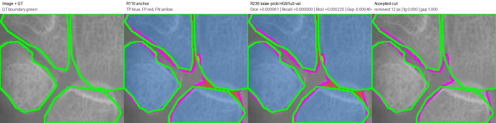
{
"anchor_boundary_f1": "0.40271462036654265",
"anchor_boundary_iou": "0.25212440150109994",
"anchor_component_count_mae": "2.0",
"anchor_component_delta_mean": "-2.0",
"anchor_dice": "0.9354451250805298",
"anchor_gap_region_fp_rate": "0.19699111470113084",
"anchor_iou": "0.8787194978100992",
"anchor_precision": "0.9343126990359029",
"anchor_recall": "0.9365802995517656",
"cut_pixels": "12.0",
"delta_boundary_f1": "0.00028689415913546457",
"delta_boundary_iou": "0.00022493895928460406",
"delta_component_count_mae": "0.0",
"delta_component_delta_mean": "0.0",
"delta_dice": "6.129042588576272e-05",
"delta_gap_region_fp_rate": "-0.0004038772213247055",
"delta_iou": "0.00010817117154848788",
"delta_precision": "0.00012229223809367973",
"delta_recall": "0.0",
"edited": "1.0",
"image": "6606.png",
"num_accepted_cuts": "1.0",
"r233_boundary_f1": "0.4030015145256781",
"r233_boundary_iou": "0.25234934046038454",
"r233_component_count_mae": "2.0",
"r233_component_delta_mean": "-2.0",
"r233_dice": "0.9355064155064156",
"r233_gap_region_fp_rate": "0.19658723747980614",
"r233_iou": "0.8788276689816477",
"r233_precision": "0.9344349912739965",
"r233_recall": "0.9365802995517656"
}
cut=17.0 px, Dice +0.000307, Recall +0.000000, BIoU +0.002010, gapFP -0.001045
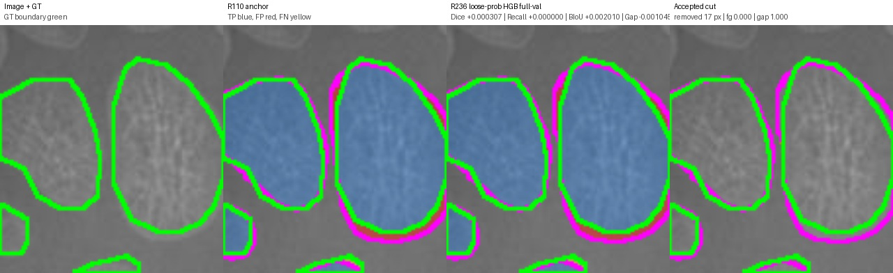
{
"anchor_boundary_f1": "0.47479741793709657",
"anchor_boundary_iou": "0.31130121566861774",
"anchor_component_count_mae": "0.0",
"anchor_component_delta_mean": "0.0",
"anchor_dice": "0.9073808385142675",
"anchor_gap_region_fp_rate": "0.19247787610619468",
"anchor_iou": "0.8304639626495477",
"anchor_precision": "0.8750864785917442",
"anchor_recall": "0.9421501282794008",
"cut_pixels": "17.0",
"delta_boundary_f1": "0.002334844114819379",
"delta_boundary_iou": "0.002010472643070582",
"delta_component_count_mae": "0.0",
"delta_component_delta_mean": "0.0",
"delta_dice": "0.000307482493566269",
"delta_gap_region_fp_rate": "-0.001044739429695185",
"delta_iou": "0.0005152701691683026",
"delta_precision": "0.0005721499225437299",
"delta_recall": "0.0",
"edited": "1.0",
"image": "6698.png",
"num_accepted_cuts": "1.0",
"r233_boundary_f1": "0.47713226205191595",
"r233_boundary_iou": "0.3133116883116883",
"r233_component_count_mae": "0.0",
"r233_component_delta_mean": "0.0",
"r233_dice": "0.9076883210078338",
"r233_gap_region_fp_rate": "0.1914331366764995",
"r233_iou": "0.830979232818716",
"r233_precision": "0.8756586285142879",
"r233_recall": "0.9421501282794008"
}
cut=4.0 px, Dice +0.000038, Recall +0.000000, BIoU +0.000464, gapFP -0.000175
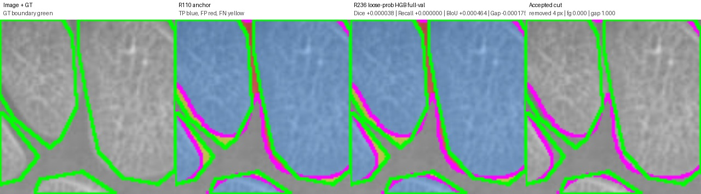
{
"anchor_boundary_f1": "0.3557485801555863",
"anchor_boundary_iou": "0.2163589922210612",
"anchor_component_count_mae": "2.0",
"anchor_component_delta_mean": "-2.0",
"anchor_dice": "0.9079994533163721",
"anchor_gap_region_fp_rate": "0.1456825856246985",
"anchor_iou": "0.8315009146047945",
"anchor_precision": "0.9269936674895353",
"anchor_recall": "0.8897679976923394",
"cut_pixels": "4.0",
"delta_boundary_f1": "0.0006275469375867093",
"delta_boundary_iou": "0.00046441425751769794",
"delta_component_count_mae": "0.0",
"delta_component_delta_mean": "0.0",
"delta_dice": "3.818533158039816e-05",
"delta_gap_region_fp_rate": "-0.0001754155155023196",
"delta_iou": "6.404659371894716e-05",
"delta_precision": "7.960272793539058e-05",
"delta_recall": "0.0",
"edited": "1.0",
"image": "8253.png",
"num_accepted_cuts": "1.0",
"r233_boundary_f1": "0.356376127093173",
"r233_boundary_iou": "0.2168234064785789",
"r233_component_count_mae": "2.0",
"r233_component_delta_mean": "-2.0",
"r233_dice": "0.9080376386479525",
"r233_gap_region_fp_rate": "0.14550717010919617",
"r233_iou": "0.8315649611985134",
"r233_precision": "0.9270732702174707",
"r233_recall": "0.8897679976923394"
}